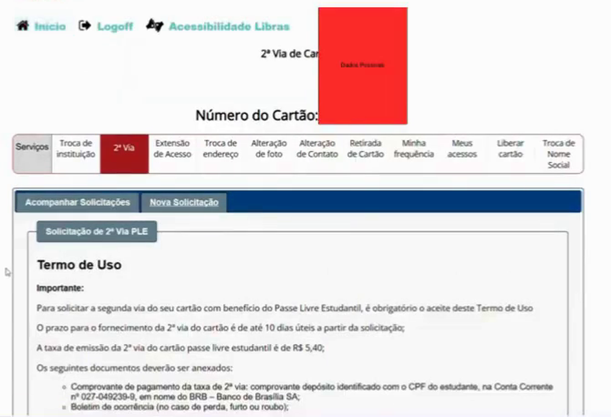
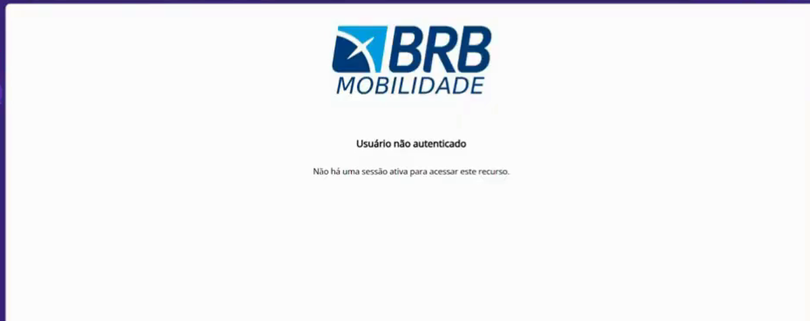

Personas e UX
Para avaliar a experiência do usuário (UX) no BRB Mobilidade Estudantil, o grupo criou quatro personas, cada uma representando um perfil de estudante com necessidades diferentes. Cada integrante avaliou o site do ponto de vista de uma persona, como se fosse um usuário, e registrou os problemas encontrados e as soluções possíveis.
As personas são fictícias e foram construídas a partir do teste de usabilidade e da avaliação heurística do grupo. Os conceitos de persona estão na página Personas.
| Persona | Perfil |
|---|---|
| Persona 1: Joana | Deficiência visual |
| Persona 2: Camila | Deficiência auditiva |
| Persona 3: Jean | TDAH |
| Persona 4: Marina | Letramento digital baixo ou intermediário |
Persona 1: Joana (deficiência visual)
Joana, 32 anos: trabalhadora e mãe sem rede de apoio, com cegueira total.
"Quando o leitor de tela não identifica o que eu preciso, não sei o que quer dizer."
- Hábitos tecnológicos: utiliza leitor de tela e teclado para realizar tarefas no computador.
- Objetivo: fazer o acompanhamento do Passe Livre Estudantil do filho.
- Expectativa: botões, imagens, erros e links com descrições claras, navegação por teclado lógica e foco que retome do ponto anterior.
UX: erros e soluções possíveis
| Funcionalidade | O que a usuária faz | Problema | Como ela se sente | Solução possível |
|---|---|---|---|---|
| Recuperação de senha | Tenta recuperar a senha sem preencher os campos | Erros invisíveis para o leitor de tela | Não sabe se o sistema travou ou se faltou algo | Usar alerta dinâmico para o leitor de tela anunciar o erro na hora |
| Tela de login | Insere o CPF e a senha e comete um erro | Mensagem de erro genérica | Não sabe em qual campo errou | Indicar o erro no campo específico e mover o foco para ele automaticamente |
| Liberação de cartão | Tenta desbloquear um cartão e busca orientação | Ícones de interrogação invisíveis para o leitor de tela | Depende de terceiros | Adicionar texto de ajuda acessível e garantir navegação por teclado |
Persona 2: Camila (deficiência auditiva)
Camila, 21 anos: estudante universitária, pessoa com deficiência auditiva.
- Hábitos tecnológicos: utiliza Libras como meio de comunicação e usa celular e computador diariamente.
- Objetivo: solicitar e acompanhar o Passe Livre Estudantil com autonomia.
- Tarefas no site: acessar a conta, realizar solicitações, consultar documentos e acompanhar o andamento do cartão.
- Expectativa: informações claras, instruções fáceis de compreender e vídeos com Libras e legendas.
- O que dificulta: a ausência de conteúdos em Libras e de alternativas visuais para possíveis avisos sonoros.
UX: dificuldades e soluções
| Problema | Impacto para a usuária | Solução possível |
|---|---|---|
| Navegação inconsistente | Dificuldade para localizar funções e continuar as tarefas | Manter menus e padrões de navegação consistentes |
| Links pouco objetivos | Dificuldade para identificar a finalidade de cada link | Utilizar nomes claros que indiquem o destino |
| Abertura de novas páginas sem aviso | Interrupção do fluxo de navegação ao abrir novas abas ou páginas | Avisar previamente quando uma ação abrir outra página |
Persona 3: Jean (TDAH)
Jean, 22 anos: estudante universitário que utiliza o Passe Livre Estudantil e possui TDAH.
"Quando tem muita informação na tela, acabo me perdendo e demoro para encontrar o que preciso."
- Hábitos tecnológicos: utiliza o celular diariamente e prefere interfaces organizadas, instruções diretas e informações simples.
- Objetivo: resolver questões relacionadas ao Passe Livre Estudantil de forma rápida e independente.
- Tarefas no site: consultar informações do cartão, solicitar a 2ª via, verificar postos de atendimento e realizar a extensão de acesso.
- Expectativa: encontrar informações facilmente, realizar tarefas com poucas etapas e receber orientações claras.
- O que dificulta: excesso de informações, textos extensos, muitas opções na mesma tela, elementos que desviam a atenção e instruções pouco objetivas.
UX: problemas e soluções
| Problema | Impacto para o usuário | Solução possível |
|---|---|---|
| Tempo de sessão limitado | Pode interromper uma tarefa antes de sua conclusão | Avisar antes do encerramento e permitir ampliar o tempo da sessão |
| Erros nos formulários | Dificultam a identificação do que precisa ser corrigido | Destacar o campo com erro e apresentar instruções simples de correção |
| Navegação inconsistente | Dificulta a localização das funções e a continuidade das tarefas | Manter menus e padrões de navegação consistentes em todas as páginas |
Persona 4: Marina (letramento digital baixo ou intermediário)
Marina, 18 anos: estudante do ensino médio, beneficiária do Passe Livre Estudantil.
"Tenho medo de clicar errado e perder o meu benefício."
- Hábitos tecnológicos: usa o celular todos os dias para mensagens e redes sociais, mas tem pouca prática com sites de serviço. Lê devagar, tem medo de errar e costuma desistir quando não entende um termo ou uma mensagem.
- Objetivo: resolver tudo pelo site, sem depender de outra pessoa e sem ir a um posto.
- Tarefas no site: 2ª via do cartão, posto de atendimento, troca de instituição e extensão de acessos.
- Expectativa: passo a passo claro, textos curtos e avisos que digam o que fazer quando algo dá errado.
- O que dificulta: siglas, textos longos, muitas opções ao mesmo tempo e erros sem orientação.
UX: problemas e soluções
Na tela de 2ª via do cartão, a Marina se sente perdida no menu, cansada com o texto e com medo de aceitar sem entender. Os problemas 1 a 3 aparecem nessa tela. Os problemas 4 e 5 vêm de outras telas do teste de usabilidade.

Figura 1 – Tela de 2ª via do cartão, gravada no teste com a usuária (dados pessoais cobertos). Fonte: Grupo 06 (2026).
| # | Problema | Como ela se sente | Solução possível |
|---|---|---|---|
| 1 | 11 serviços em abas pequenas, sem busca | Perdida, não sabe onde clicar | Menu agrupado por assunto e campo de busca |
| 2 | Sigla sem explicação: o título "Solicitação de 2ª Via PLE" não diz o que é PLE | Insegura | Explicar a sigla na primeira vez que aparece |
| 3 | Termo de Uso longo e difícil: prazo, taxa e documentos misturados em texto corrido | Cansada, aceita sem entender tudo | Resumir em passos, com valor e prazo em destaque |
| 4 | "Usuário não autenticado", sem botão | Acha que o site parou de funcionar | Mensagem simples e botão "Entrar" |
| 5 | Extensão de acesso e postos difíceis de achar | Desanimada, não resolve só pelo site | Destacar esses serviços na tela inicial da conta |
O problema 5 também aconteceu no teste com a usuária real: ela não encontrou onde pedir a extensão de acessos e só achou os postos de atendimento fora da área do cadastro.

Figura 2 – Mensagem "Usuário não autenticado. Não há uma sessão ativa para acessar este recurso.", sem botão para voltar (problema 4). Fonte: Grupo 06 (2026).
Referência
BARBOSA, S. D. J. et al. Interação Humano-Computador e Experiência do Usuário. Autopublicação, 2021.
Para as demais normas e materiais, acesse a página de referências bibliográficas.